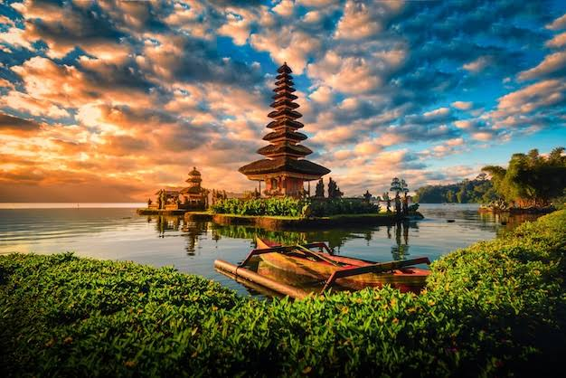
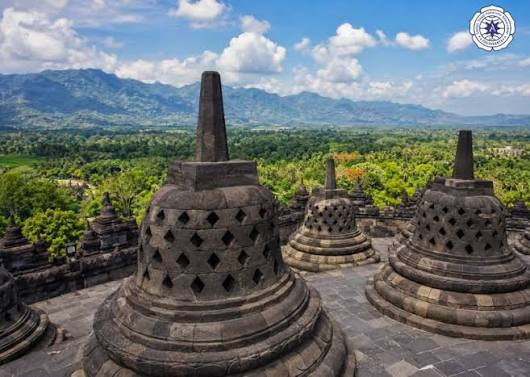

JELAJAH WISATA INDONESIATemukan keindahan Alam dan budaya Indonesia |
| BERANDA | WISATA | GALERI |
|---|
Selamat datang di website jelajah wisata Indonesia. Website ini berisi informasi mengenai beberapa tempat wisata di Indonesia.
Indonesia memiliki berbagai tempat wisata yang menakjubkan, mulai dari pantai yang indah hingga gunung yang megah.
Berikut adalah beberapa destinasi wisata yang dapat Anda kunjungi di Indonesia:
|
 |
 |
|---|---|---|
| Gunung Bromo | Pantai Kuta | Candi Borobudur |
| gunung bromo merupakan salah satu tempat wisata terkenal di Jawa Timur | pantai kuta merupakan salah satu tempat wisata terkenal di Bali | candi borobudur merupakan salah satu tempat wisata terkenal di Jawa Tengah |
Silahkan dengarkan musik nusantara berikut sambil menikmati informasi wisata indonesia
Silahkan melihat video berikut sambil menikmati informasi wisata indonesia